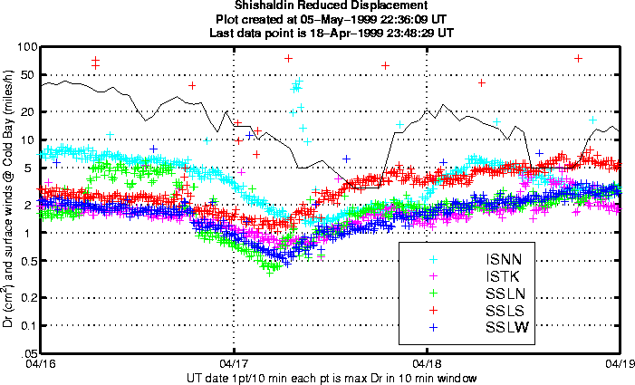

Reduced displacement for Shishaldin, 16-18th April 1999. For the most part the reduced displacement tracks the wind (black line) but towards the end of the 18th tremor begins to emerge again above the wind noise.
.
Glenn Thompson, 5 May 1999.